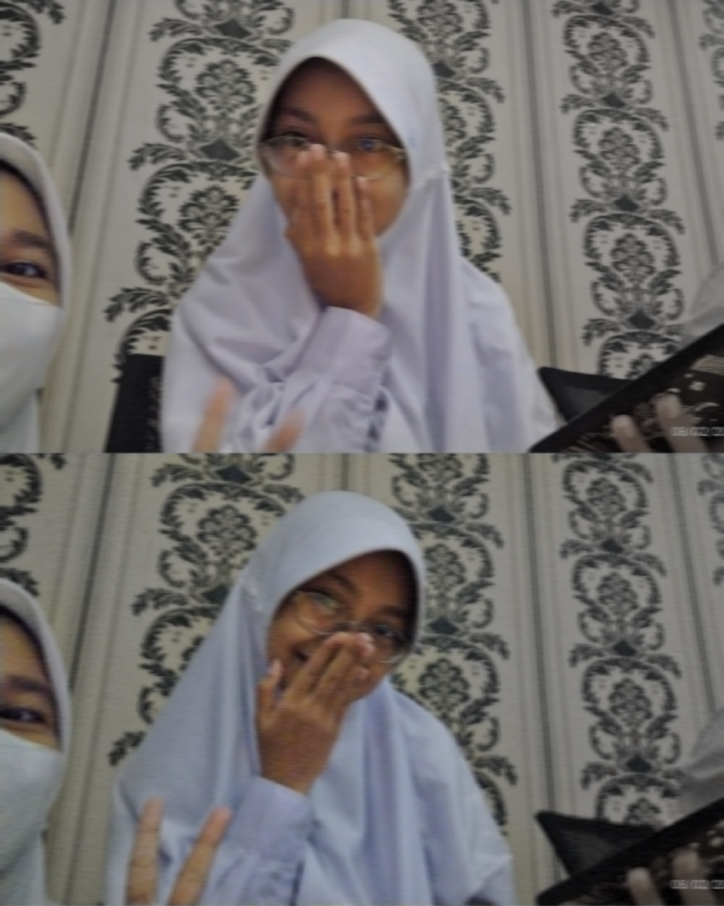
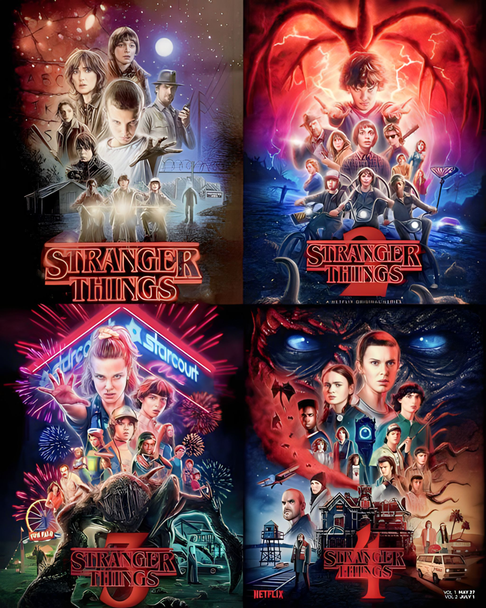
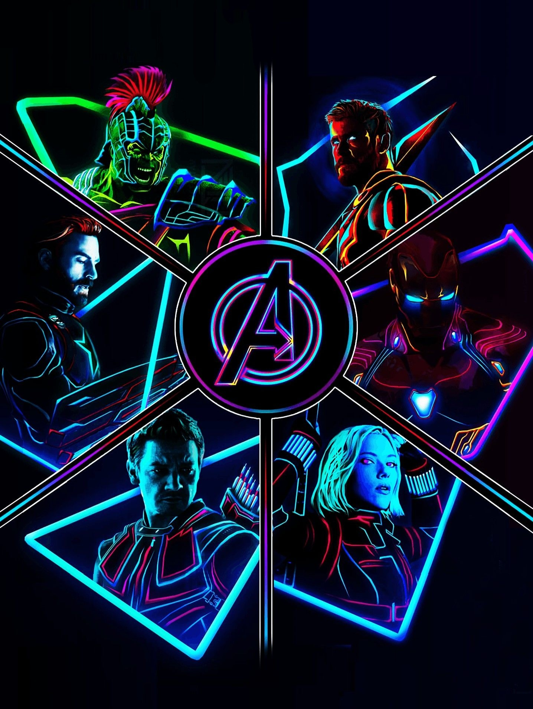
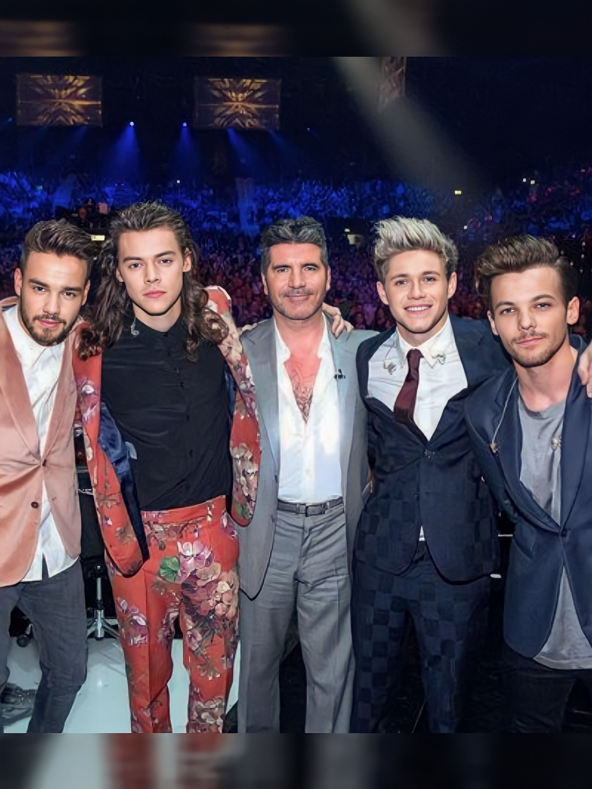

WHO AM I ?
Sekarang ini saya dan teman-teman saya sedang mempelajari bagaimana cara membuat suatu halaman website sederhana yang berisi tentang diri sendiri seperti hobi, cita-cita, dan lain-lain. Maka dari itu, di sini saya akan memperkenalkan diri saya.
Halooo, nama saya Nadhifa Salma Aisyah. Saya bersekolah di SMK Negeri 8 Semarang, dari kelas XI dengan jurusan Pengembangan Perangkat Lunak dan Gim Index 3, dengan nomor absen 18. Saya lahir di Semarang pada tanggal 15 Juni 2007 dan sekarang ini saya berusia 16 tahun. Saya mempunyai seorang kakak perempuan yang usianya tidak terpaut begitu jauh dengan saya. Ia lahir pada tanggal 17 Oktober 2005, namanya adalah Oktavia Rizqi Ramadhani.
|  |
| Nama |
Nadhifa Salma Aisyah |
| Tempat, Tanggal Lahir |
Semarang, 15 Juni 2007 |
| Asal Sekolah |
SMK Negeri 8 Semarang |
| NISN |
0078530599 |
| NIS |
10572 |
Saya mempunyai hobi yang terkadang dapat berubah-ubah, tetapi saya sangat suka menonton series dan movies. Series yang berjudul Stranger Things menjadi series favorit saya, dan film-film hasil produksi perusahaan Marvel Studios juga menjadi favorit saya hingga saat ini. Selain itu, saya juga senang mendengarkan musik karena itu membuat saya lebih tenang dan rileks. Terkadang, saya juga mengedit foto dan video untuk menghilangkan rasa gabut atau bosan saat kuota internet saya habis.
Ini adalah beberapa hobi saya
- Menonton series dan movies
- Mendengarkan musik
Ini adalah salah satu series dan movies yang saya tonton
| Cover |
Judul |
Pemain |
|  |
Stranger Things |
- Millie Bobby Brown, as Eleven
- Noah Schnapp, as Wll Byers
- Finn Wolfhard, as Mike Wheeler
- Sadie Sink, as Maxine Mayfield
- Caleb McLaughlin, as Lucas Sinclair
- Gaten Matarazzo, as Dustin Henderson
- Joe Keery, as Steve Harrington
- David Harbour, as Jim Hopper
- Winona Ryder, as Joyce Byers
- dan lain lain.
|
|  |
The Avengers |
- Robert Downey Jr, as Iron Man
- Chris Evans, as Captain America
- Chris Hemsworth, as Thor
- Scarlett Johansson, as Natasha Romanov
- Jaremy Renner, as Clint Barton
- Mark Ruffalo, as Hulk
- Samuel L.Jackson, as Nick Fury
- dan lain lain
|
Ini adalah beberapa music yang saya dengarkan
| Penyanyi |
Nama |
Lagu |
 |
Justin Bieber |
- Eenie Meenie
- Baby ft. Ludacris
- Favourite Girl
- One Less Lonely Girl
- Let Me Love You
- Intentions
- Ghost
- Love Yourself ft. Ed Sheeran
- That Should Be Me
- dan lain lain.
|
|  |
One Direction |
- 18
- Night Changes
- Steal My Girl
- What Makes You Beautiful
- Strong
- Right Now
- Story Of My Life
|
Untuk cita-cita, sebenarnya saya belum memikirkan apa cita-cita saya yang pasti. Sejak SD hingga sekarang, cita-cita saya berubah-ubah dan tidak konsisten. Saat saya SD, saya ingin menjadi guru matematika karena pada saat SD pelajaran matematika tidak sulit atau dapat di bilang mudah. Tetapi saat masuk SMP, keinginan saya untuk menjadi guru matematika sudah mulai redup karena pada saat SMP pelajaran matematika sudah mulai sulit bagi saya, apalagi saat itu pembelajaran dilakukan secara daring karena saat itu virus COVID-19 sedang tersebar luas di Semarang. Jika ingin tau apa cita-cita saya sekarang, kembali lagi ke awal, saya belum memikirkannya tetapi saya sudah ada rencana yang tidak ingin saya publik, mohon kerjasamanya. Terimakasih